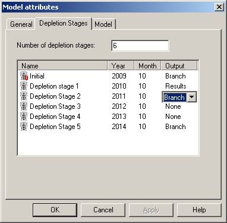

Branches, restarts and parameter changes
Geomec allows Branching of a run file. Within the model attributes, the Output type has to be selected as “Branch”

Branching has several advantages. The user can:
- restart a run after branching, for instance after divergence of the run, hence re-using the successful part of the run
- run more than one variation of depletion scenario’s without having to rerun the initial (history matched) stages
- change material properties between the stages, for instance to distinguish between geological time-scale properties and depletion time scale properties
- do some paleospastic reconstruction by simulating material deposition or erosion (by changing the density and stiffness parameters to sea-water like properties)
The disadvantages of branching are:
- writing and reading intermediate files slows down computation
- restart files can take of lot of disk memory. The user needs to clear them manually if they are no longer required.
- Geomec will perform an extra step, basically initializing the model with the stresses from the previous step.
- The branching does not work in Linear Elastic run-mode. The user must run in non-linear mode, although all material models might be elastic.
Output Type: Results, Branches, None
The output selection “Results” is the default. Computation results are stored and saved in the GMP file. If the user chooses “Branch”, two additional files get exported, that allow restarting from this point (see below). If the user chooses “none”, then Geomec results will not get saved on the GMP –file. This can be a necessary option to limit the file size, where the Stage is required, given that superposition principle does not apply for non-linear runs. This is mainly a problem for PCs with limited internal memory or that run with the 32bit version of Geomec.
For linear runs all results will be written out and the other options do not apply. Restarts will also not work in linear runs. The parameters of the initial depletion stage will be used in all depletion stages.
Branch files
If we have a Geomec file (named run1.gmp) and if a Depletion Stage (say Depletion Stage 2, in short D2) is labeled as Branch Stage, then Geomec will export an intermediate results file after finishing Depletion Stage 2. A suffix _D2 will be given to the file (run1_D2.gmp) that ends up in the same directory as the active file. Also a Diana restart file will be created with the same name, but with a .ff extension, in this case run1_D2.ff.
Whilst the run “run1” is continuing, the user can already open the file “run1_D2.gmp”. The user can modify pressure, temperature data or change material parameters from Depletion Stage 3 on (not the historic data). Also user defined Fault parameter can be changed. In order to rerun, the user must have a GMP and FF of the same name, in the same folder. If “run1_D2.gmp” is renamed into “run2”, than the associated “run1_D2.ff” should be manually renamed into “run2.ff”
Limitations
The user cannot change the material model type (for instance from Elastic to Camclay). The user can change parameters (the model), either by creating and assigning a new model (of the same kind) or by assigning different pointsets.
Some parameters are not available for changing, like pore collapse parameters.
Example
In the screenshot below, there is a branch request after the stress initialization (D0) and after the second depletion stage (D2). The screen shows that for Depletion Stage 1 (D1) and 3 (D3), new material models can be added. If nothing is added, Geomec will take the same material properties as in the previous stage, including any attached pointsets. Geomec will show a blue arrow up, indication the link to previous models. In this case however, D0 and D1 have an identical general material model (called test). The attached density pointset is however different (“hisdensity” versus “density”). In D3 a different set of (base) parameters is used in a material model called ”changed”, whereas the density pointset remains unchanged.
If you wish to attach a different pointset, you must also attribute a material model, which can be the same model, but can also be a different model.
 |
Used (attributed) materials models are sometimes locked (indicated with the exclamation mark (!) sign, to prevent changing historic parameters. To change parameters or the model type, the user has to make a copy of the model or delete the model from the Formations first.